A magazine about you
Every issue
needs a
cover star.
needs a
cover star.
Answer a few questions. We’ll build your first Issue around the life you’re calling in.
BEGIN I ALREADY HAVE AN ACCOUNT
Question 02
Who are you
becoming?
becoming?
Question 07
One year
from now,
she…
from now,
she…
wakes up by the ocean, runs her own studio, and has nothing left to prove.
WealthLoveTravel


Lucky Star is building
Your first
issue
issue
✓Reading your answers
✓Choosing your cover image
Writing your cover lines
Setting up Wealth, Love, Travel


A MAGAZINE BY YOUSEE IT. WRITE IT. BECOME IT.
Continue with Apple
Continue with email
SAVE YOUR ISSUE · BY CONTINUING YOU AGREE TO THE TERMS & PRIVACY POLICY
VOL. 01THU · OCT 02
 Your issue
Your issue
The
future
issue
future
issue
7 OF 11 PAGES4 TO GO
Resume: Become her
Session · 7 min left
Your ritual
12 DAY STREAK

Create
See all
Best with headphones
She doesn’t ask for permission.
She already lives
the life she pictured.
the life she pictured.
Breathe it in.
Self concept · Video
Become her.
04:12-07:48
LUCKY STAR
Eyes closed · Become her
Breathe in for four.
08:12 left
Tap anywhere to pause · screen dims in 5s

Your entries
7 in this issue

Oct 01 · P.07
The morning she wakes up rich
6am. Ocean air. Nothing to prove, everything to build.

Sep 24 · P.05
A home I love
White walls, a long table, friends who stay until 2am.

Sep 28 · P.06
Same girl. Higher standards.
I stopped negotiating with the version of me that settles.
Sep 20 · P.04
Soft power
I don’t chase. I attract.
My
issue
issue
Vol. 01
The life
in frame
Edit coverin frame
7 / 11 PAGES
4 to go
 0102
010203
04050607+08
+09
+10
+11